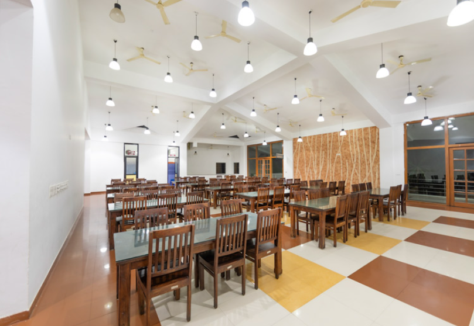
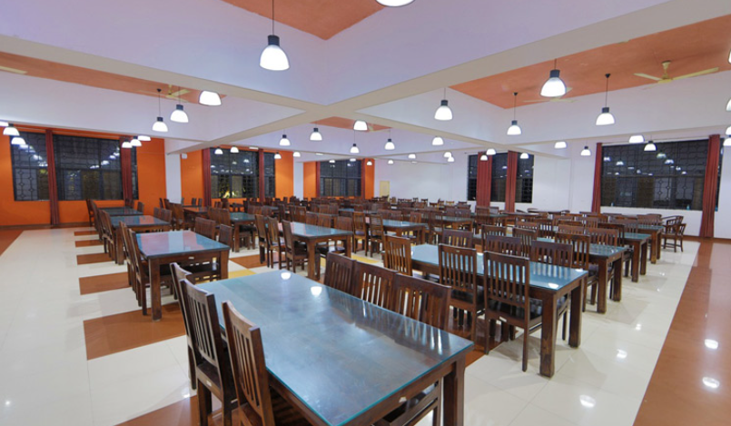
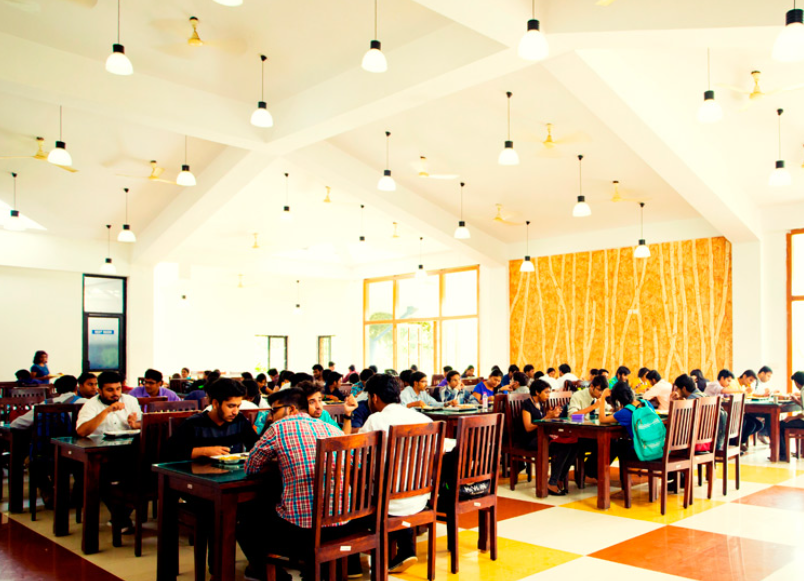

🍛 Alliance University Canteen
The university’s modern and well-lit dining halls provide students with a comfortable and hygienic dining experience. A state-of-the-art kitchen equipped with advanced facilities ensures a wide array of multi-cuisine delicacies are served under proper hygienic conditions. The university is engaged with one of the finest caterers in the health and education sector, with a proven track record in culinary expertise and chefs from Taj. The food service is available on a self-service basis. Apart from the daily menu at the food court, Aromas—one of the restaurants on campus—provides best-in-class multi-cuisine dishes to the student community and university members.



📍 Location: Alliance University Campus
⏰ Timings:
- Breakfast: 8:00 AM – 10:30 AM
- Lunch: 12:00 PM – 3:00 PM
- Snacks: 4:00 PM – 6:00 PM
- Dinner: 7:00 PM – 9:00 PM
🍽 Facilities Available:
- South Indian Meals
- North Indian Meals
- Snacks & Beverages
- Juice Counter
- Online Payment (UPI)
- Seating Area
☎️ Contact: Canteen Office – +91 9876542310